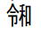

VBA100本ノック 7本目：日付データの扱い
日付データに関する問題です。
そもそも日付とはどのようなデータなのかも考えてみましょう。
ツイートでの見やすさを考慮して、ブック・シート指定等を適宜省略しています。
出題
A列は文字列データ（表示形式が文字列）で日付が入っています。
日付とみなされる場合はB列に月末日付をmmddの形式で出力してください。
日付け以外の場合は空欄にしてください。
例.B2は「0930」と出力する。
※何をもって日付とみなすかも含めて考えてください。
https://excel-ubara.com/vba100sample/VBA100_07.xlsm
https://excel-ubara.com/vba100sample/VBA100_07.zip
頂いた回答
解説
日付の判定はIsDate関数を使います。
ただし人が日付と認識するものとは少しずれがあります。
どのような経緯で発生したデータかによって注意して使ってください。
添付ではIsDateでFalse判定される中から"."区切りだけを救っています。
シート指定は省略しています。
Sub VBA100_07()
Dim i As Long
Dim d As Variant
For i = 2 To Cells(Rows.Count, 1).End(xlUp).Row
d = Replace(Cells(i, 1).Value, ".", "/")
If IsDate(d) Then
d = CDate(d)
Cells(i, 2) = Format(DateSerial(Year(d), Month(d) + 1, 0), "'mmdd")
Else
Cells(i, 2) = ""
End If
Next
End Sub
問題文は「mmddの形式で出力」なので、表示形式ではなくデータとしてmmddで出力しました。
元号の合字はIsDateがFalseになります。
これを救うには1文字ずつ変換するしかありません。
※何をもって日付とするかは適宜変わってくると思います。
元号の合字を変換するFunctionのVBAサンプルも掲載しておきました。
補足
特に文字列として日付が入っている場合は、それが日付なのかどうか判断に困る場合も多々あります。
今回の主題としては、IsDate関数とCDate関数の挙動について把握することにあります。
それ以外に、人間が見た時に日付とみなされそうなものを救って見ようという主旨で作成しました。
という事になりますが、VBAが扱うデータはエクセルで入力したものとは限りません。
他システムからの出力データやWEBからのコピーデータを扱う事も多いので、日付けデータの形式については理解しておきましょう。
これは、Date型（つまりシリアル値）に変換可能かの判定になります。
あくまでVBAがDate型に変換できるかどうかであり、人の見た目で日付とみなすかどうかとは関係ありません。
この点に注意して使ってください。
| 日付 | IsDate |
| 2020/9/1 | True |
| 2020/9/02 | True |
| 10/3 | True |
| 20 10 4 | True |
| 2020.10.5 | False |
| 2020-10-6 | True |
| 令和元年10月 | True |
| 令1年11月2日 | True |
| 令元年11月03日 | True |
| ㋿元年11月04日 | False |
IsDate関数でTrueならCDateでシリアル値に変換できます。
DateSerial関数のDayに0を指定すると、前月末日になります。
末日より大きい数値を指定した場合は、超えた日数分の翌月の日付けになります。
Monthに0と指定すれば、前年の12月、13と指定すれば翌年の１月
そこで、文字列にするにあたり、セルの表示形式を"@"で文字列にしておいてももちろん良いのですが、
上記のVBAでは、
"'mmdd"
これで先頭に"'"をつけて文字列としてセルに入れています。
これらの文字については、IsDateは元号として認識しません。
またVBAで固定文字として入れようとした時、

これは、?となってしまいます。
これは文字コードの問題です。
以下のFunctionは、この元号の合字をIsDateが認識できる元号に変換するものです。
Function EditDate(ByVal d As String) As String
Dim g1, g2
g1 = Array(&H337E, &H337D, &H337C, &H337B, &H32FF)
g2 = Array("明治", "大正", "昭和", "平成", "令和")
Dim i As Long
For i = LBound(g1) To UBound(g1)
If InStr(d, ChrW(g1(i))) > 0 Then
d = Replace(d, ChrW(g1(i)), g2(i))
Exit For
End If
Next
EditDate = d
End Function
令和以外はVBAに直接合字を記入できますが、令和に合わせて文字コードで記載しました。
サイト内関連ページ
同じテーマ「VBA100本ノック」の記事
4本目：セルの消去
5本目：セルの計算
6本目：セルに計算式
7本目：日付データの扱い
8本目：点数の合否判定
9本目：フィルターコピー
10本目：行の削除
11本目：セル結合の警告
12本目：セル結合を解除
13本目：文字列の部分フォント
14本目：社外秘シート削除
新着記事NEW ・・・新着記事一覧を見る
VBA100本ノック 100本目：WEBから100本ノックのリストを取得｜VBA練習問題（3月3日）
VBA100本ノック 99本目：自動席替え（行列と前後左右が全て違うように）｜VBA練習問題（3月2日）
VBA100本ノック 98本目：席替えルールが守られているか確認｜VBA練習問題（3月1日）
VBA100本ノック 97本目：Accessデータを取得（グループ集計）｜VBA練習問題（2月27日）
VBA100本ノック 96本目：Accessデータを取得（マスタ結合&抽出）｜VBA練習問題（2月26日）
VBA100本ノック 95本目：図形のテキストを検索するフォーム作成｜VBA練習問題（2月24日）
VBA100本ノック 94本目：表範囲からHTMLのtableタグを作成｜VBA練習問題（2月23日）
VBA100本ノック 93本目：複数ブックを連結して再分割｜VBA練習問題（2月22日）
VBA100本ノック 92本目：セルの色を16進で返す関数｜VBA練習問題（2月20日）
VBA100本ノック 91本目：時間計算（残業時間の月間合計）｜VBA練習問題（2月19日）
アクセスランキング ・・・ ランキング一覧を見る
1.最終行の取得（End,Rows.Count）｜VBA入門
2.RangeとCellsの使い方｜VBA入門
3.変数宣言のDimとデータ型｜VBA入門
4.マクロって何？VBAって何？｜VBA入門
5.Range以外の指定方法（Cells,Rows,Columns）｜VBA入門
6.セルのコピー&値の貼り付け（PasteSpecial）｜VBA入門
7.繰り返し処理（For Next)｜VBA入門
8.セルに文字を入れるとは（Range,Value）｜VBA入門
9.マクロはどこに書くの（VBEの起動）｜VBA入門
10.とにかく書いてみよう（Sub,End Sub）｜VBA入門
- ホーム
- マクロVBA入門編
- VBA100本ノック
- 7本目：日付データの扱い
このサイトがお役に立ちましたら「シェア」「Bookmark」をお願いいたします。
記述には細心の注意をしたつもりですが、
間違いやご指摘がありましたら、「お問い合わせ」からお知らせいただけると幸いです。
掲載のVBAコードは動作を保証するものではなく、あくまでVBA学習のサンプルとして掲載しています。
掲載のVBAコードは自己責任でご使用ください。万一データ破損等の損害が発生しても責任は負いません。